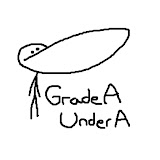
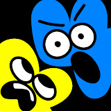
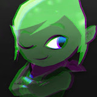
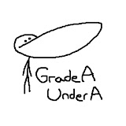
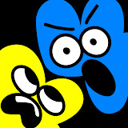
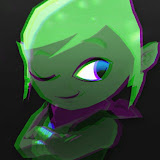
 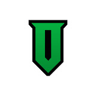
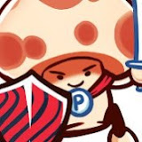
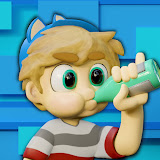
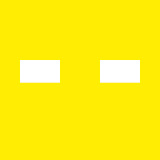
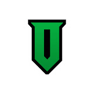
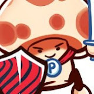
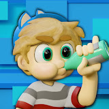
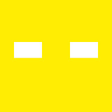
 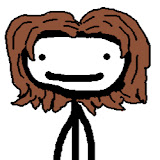
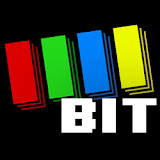
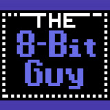
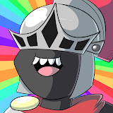
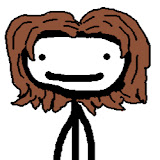
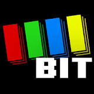
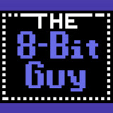
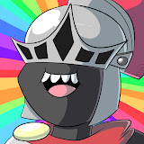
If a profile picture is green, I really like them! If it is red then I don't anymore. Grey means I don't watch them anymore. Please see the note at the bottom.
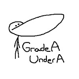
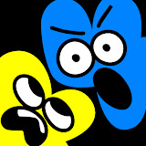
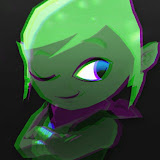
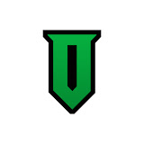
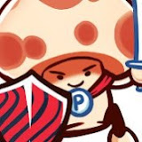
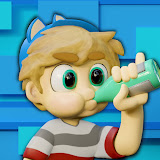
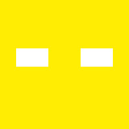
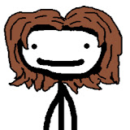
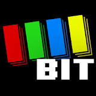
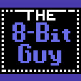
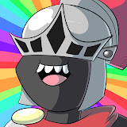
Here's a little something important when looking at this page, the name of it is a little direct but I am not what you what call a "fan". Granted these content creators did influence me but not as much as you're thinking. For example, I avoid the sponsors whenever available and I don't usually engage with their promotions, etc.